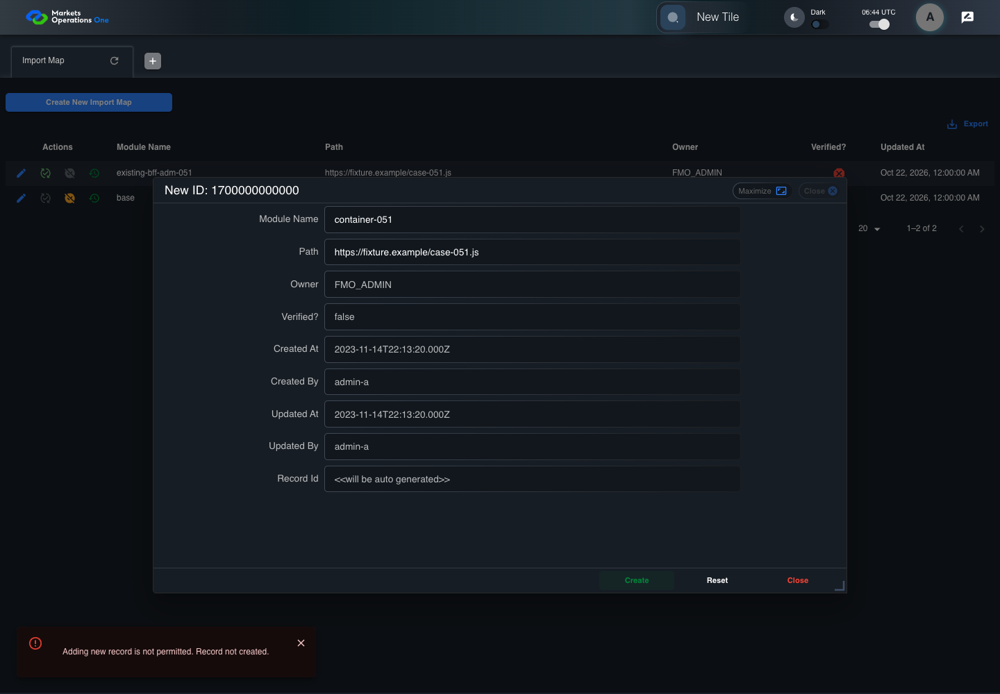
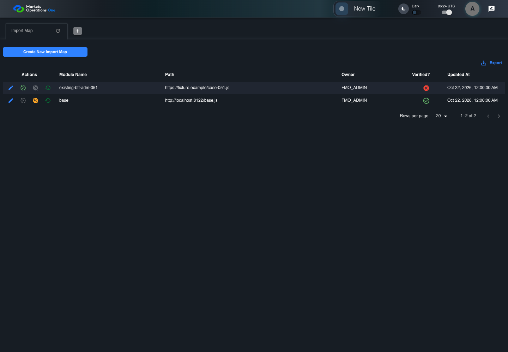
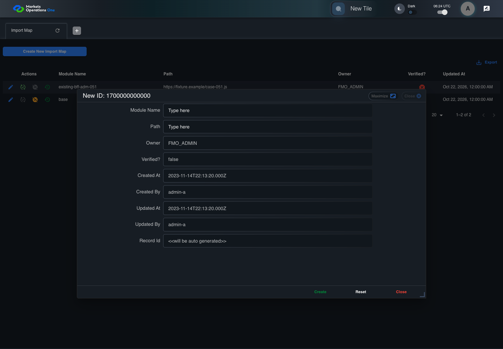
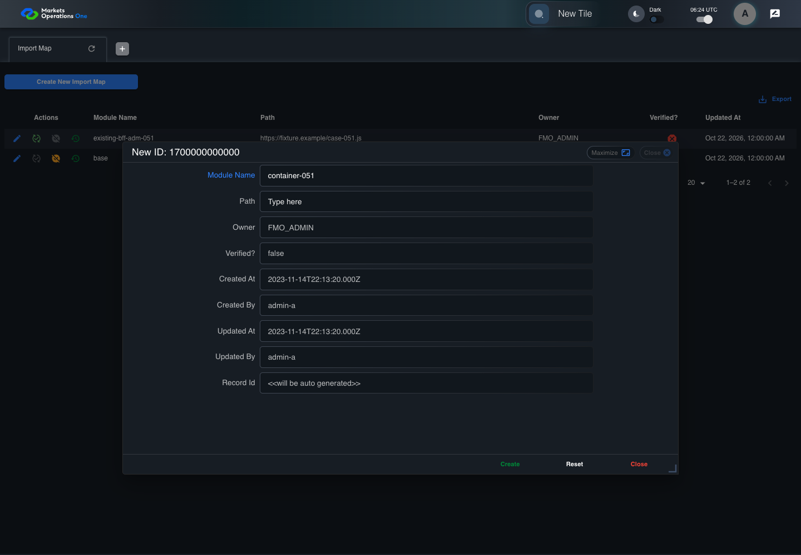
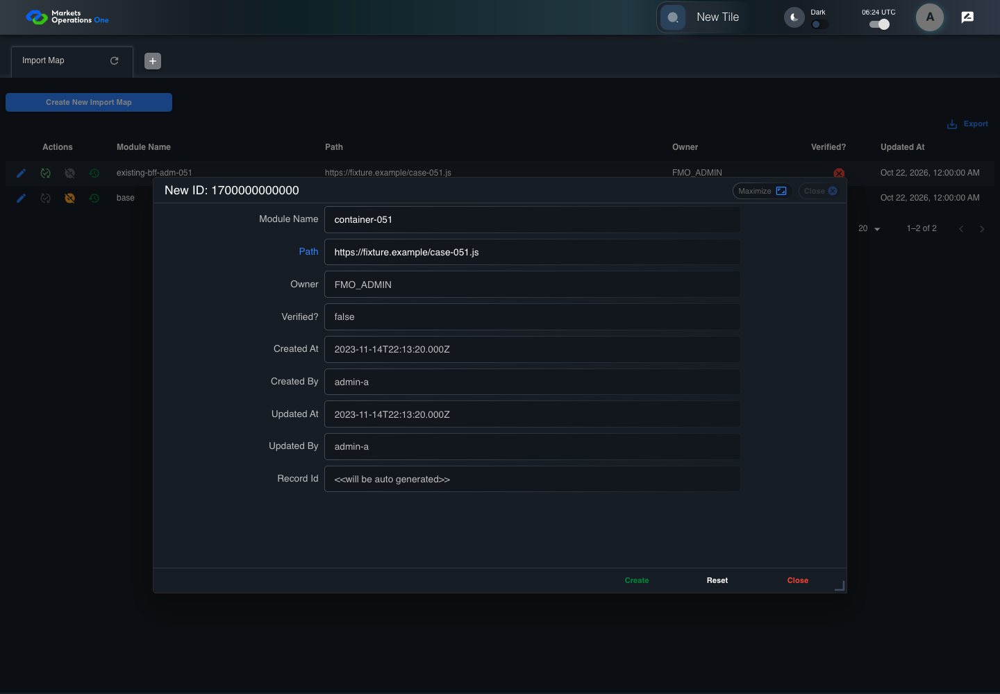
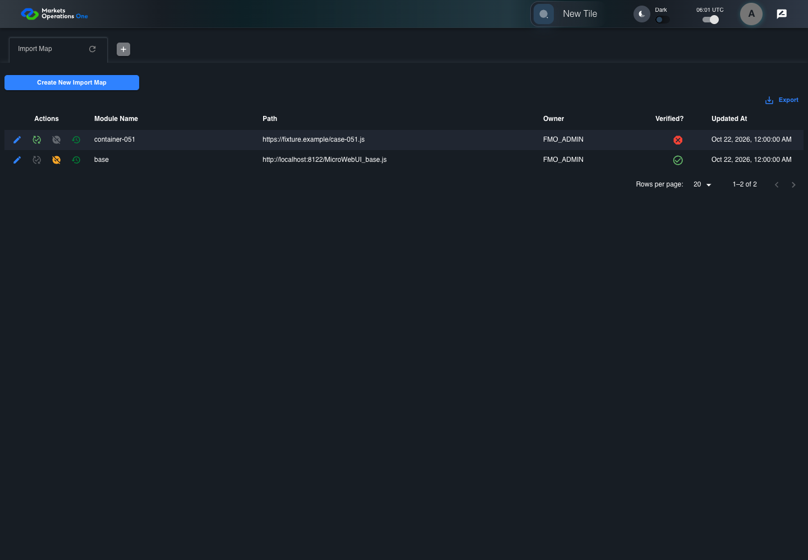

All canonical cases
BFF-ADM-051: Deny Import Map create when creation is disabled Business acceptance remains unverified. Owner: unknown. Review the canonical definition and fixture limits before acceptance.
Latest local result: PASS Business acceptance: NOT_ESTABLISHED.
The latest local result describes execution. The historical definition review assesses the case design before execution.
Latest step screenshot evidence: COMPLETE . 13/13 canonical steps have execution screenshots.
Canonical Gherkin definition . Definition version: 2. SHA-256: 489ffa06242b962d08bd66e2b8a7a77b0291de63638be81462c3a99ef080d25e.
Historical definition review (preflight): UNVERIFIED A definition review FAIL can coexist with local PASS. The definition failed preflight quality checks.
This historical review does not change the latest execution result. Resolve definition gaps before business acceptance.
Canonical Gherkin steps Feature: Admin persistence
@BFF-ADM-051
Scenario: Deny Import Map create when creation is disabled
Given Admin A uses subject "admin-a" with role "FMO_ADMIN" in an isolated authenticated browser
And the controlled Import Map fixture records the initial grid rows and persisted values
And the controlled creation clock returns 1700000000000 milliseconds
And the baseline fixture data defines "Module Name" as "container-051"
And the baseline fixture data defines "Path" as "https://fixture.example/case-051.js"
And the controlled BFF configuration sets "fmaaProperties.creationEnabled" to false
When Admin A clicks the button labeled "Create New Import Map" on the Import Map administration page
Then the dialog titled "new ID: 1700000000000" is visible on the Import Map administration page
When Admin A fills the textbox labeled "Module Name" with "container-051" in dialog "new ID: 1700000000000"
And Admin A fills the textbox labeled "Path" with "https://fixture.example/case-051.js" in dialog "new ID: 1700000000000"
And Admin A clicks the button labeled "Create" in dialog "new ID: 1700000000000"
Then the alert with severity "error" in the portal snackbar contains the exact text "Adding new record is not permitted. Record not created."
And the Import Map data grid with column "Record Id" row identifiers and loaded field values equal the initial grid snapshot on the Import Map administration page Acceptance and evidence limits: NO_COMPLETE_REAL_APPLICATION_BINDING, CANONICAL_REVIEW_OR_EVIDENCE_UNRESOLVED.
Planned essential canonical frames: 3. Plan completeness requires separate review.
Latest attempt BFF-ADM-051 current BFF administration through actual UI PASS · application/run-072/bff-adm-051-current-bff-administration-through-actual-ui-ca6efe57b7ee-attempt-1 · ACTUAL_APPLICATION_LOCAL_SERVICES
Actual current React and exact-current BFF admin controllers/services/JPA with actual migration DDL in disposable PostgreSQL. Controlled OUD/EMS2 identities and local Spring bootstrap. Fixture SQL seeds/mutates isolated records; service errors are actual database errors. Undefined agreed messages remain unresolved acceptance.
2026-10-22T06:44:07.941Z to 2026-10-22T06:44:14.661Z
Assertions and result · Artifact manifest · Exact run inputs and source hashes
Result SHA-256: b9e2c91040f2468b6ddc4b85d1e1f0f739ed61af10b45672d341f53e745604a3 Playwright trace
Machine observations Screenshot capture: CAPTURED. Named frames: 14.
Step screenshot evidence: COMPLETE. 13/13 canonical steps have execution screenshots.
Canonical step timeline Given Admin A uses subject "admin-a" with role "FMO_ADMIN" in an isolated authenticated browser
1. step-01 Visible state after step 1: Given Admin A uses subject "admin-a" with role "FMO_ADMIN" in an isolated authenticated browser
2026-10-22T06:44:10.944Z · 1440×10005b3c37bec30db685a07e7df09decd262c54b87776b2c63089653c1f729bb3b4b And the controlled Import Map fixture records the initial grid rows and persisted values
2. step-02 Visible state after step 2: And the controlled Import Map fixture records the initial grid rows and persisted values
2026-10-22T06:44:11.110Z · 1440×10005b3c37bec30db685a07e7df09decd262c54b87776b2c63089653c1f729bb3b4b And the controlled creation clock returns 1700000000000 milliseconds
3. step-03 Visible state after step 3: And the controlled creation clock returns 1700000000000 milliseconds
2026-10-22T06:44:11.217Z · 1440×10005b3c37bec30db685a07e7df09decd262c54b87776b2c63089653c1f729bb3b4b And the baseline fixture data defines "Module Name" as "container-051"
4. step-04 Visible state after step 4: And the baseline fixture data defines "Module Name" as "container-051"
2026-10-22T06:44:11.524Z · 1440×10005b3c37bec30db685a07e7df09decd262c54b87776b2c63089653c1f729bb3b4b And the baseline fixture data defines "Path" as "https://fixture.example/case-051.js"
5. step-05 Visible state after step 5: And the baseline fixture data defines "Path" as "https://fixture.example/case-051.js"
2026-10-22T06:44:11.669Z · 1440×10005b3c37bec30db685a07e7df09decd262c54b87776b2c63089653c1f729bb3b4b And the controlled BFF configuration sets "fmaaProperties.creationEnabled" to false
6. step-06 Visible state after step 6: And the controlled BFF configuration sets "fmaaProperties.creationEnabled" to false
2026-10-22T06:44:11.753Z · 1440×10005b3c37bec30db685a07e7df09decd262c54b87776b2c63089653c1f729bb3b4b When Admin A clicks the button labeled "Create New Import Map" on the Import Map administration page
7. step-07 Visible state after step 7: When Admin A clicks the button labeled "Create New Import Map" on the Import Map administration page
2026-10-22T06:44:12.073Z · 1440×10005e933ee790c4b95703d1d8995c12494a928e4a44996ecc7b589915b315776027 Then the dialog titled "new ID: 1700000000000" is visible on the Import Map administration page
8. step-08 Visible state after step 8: Then the dialog titled "new ID: 1700000000000" is visible on the Import Map administration page
2026-10-22T06:44:12.243Z · 1440×10003f5d006de7c2d7b9220f47719500fb254d8b6d92924de1437c15f4b12ce1c2e2 When Admin A fills the textbox labeled "Module Name" with "container-051" in dialog "new ID: 1700000000000"
9. step-09 Visible state after step 9: When Admin A fills the textbox labeled "Module Name" with "container-051" in dialog "new ID: 1700000000000"
2026-10-22T06:44:12.894Z · 1440×100088c4f3e0c56b9452b7a10b67f3e4b65bd6a75aa32b22e73536bcda31eea8c496 And Admin A fills the textbox labeled "Path" with "https://fixture.example/case-051.js" in dialog "new ID: 1700000000000"
10. step-10 Visible state after step 10: And Admin A fills the textbox labeled "Path" with "https://fixture.example/case-051.js" in dialog "new ID: 1700000000000"
2026-10-22T06:44:13.370Z · 1440×10004ef8df56684f78a556c833b409fe1a825559a87e7e6475ec9ea8c4a59163b4b8 And Admin A clicks the button labeled "Create" in dialog "new ID: 1700000000000"

11. step-11 Visible state after step 11: And Admin A clicks the button labeled "Create" in dialog "new ID: 1700000000000"
2026-10-22T06:44:13.683Z · 1440×10001010475f651f7caad0e6b537ad47bb63cf24788fb193307f39ad6c72ebb42713 Then the alert with severity "error" in the portal snackbar contains the exact text "Adding new record is not permitted. Record not created."
12. step-12 Visible state after step 12: Then the alert with severity "error" in the portal snackbar contains the exact text "Adding new record is not permitted. Record not created."
2026-10-22T06:44:13.766Z · 1440×100041be65389f8d4dd4ca46c99e562c82ebb3ef01e238bb7183bb83c85417ba91a0 And the Import Map data grid with column "Record Id" row identifiers and loaded field values equal the initial grid snapshot on the Import Map administration page
13. step-13 Visible state after step 13: And the Import Map data grid with column "Record Id" row identifiers and loaded field values equal the initial grid snapshot on the Import Map administration page
2026-10-22T06:44:13.915Z · 1440×100041be65389f8d4dd4ca46c99e562c82ebb3ef01e238bb7183bb83c85417ba91a0 Additional named frames 14. final-result The final visible state after the named test assertions.
2026-10-22T06:44:14.064Z · 1440×100041be65389f8d4dd4ca46c99e562c82ebb3ef01e238bb7183bb83c85417ba91a0 Screenshots establish visible state only. Assertions and traces support functional claims.
Earlier attempt history (2) Earlier attempt PASS (superseded by latest PASS) BFF-ADM-051 current BFF administration through actual UI PASS · application/run-066/bff-adm-051-current-bff-administration-through-actual-ui-ca6efe57b7ee-attempt-1 · ACTUAL_APPLICATION_LOCAL_SERVICES
Actual current React and exact-current BFF admin controllers/services/JPA with actual migration DDL in disposable PostgreSQL. Controlled OUD/EMS2 identities and local Spring bootstrap. Fixture SQL seeds/mutates isolated records; service errors are actual database errors. Undefined agreed messages remain unresolved acceptance.
2026-10-22T06:24:11.890Z to 2026-10-22T06:24:15.472Z
Assertions and result · Artifact manifest · Exact run inputs and source hashes
Result SHA-256: 76dfbf64e65dd367591bf30b29211acf8b482c9d0d5807e1ac869df8bb7f8f8b Playwright trace
Machine observations Screenshot capture: CAPTURED. Named frames: 14.
Step screenshot evidence: COMPLETE. 13/13 canonical steps have execution screenshots.
Canonical step timeline Given Admin A uses subject "admin-a" with role "FMO_ADMIN" in an isolated authenticated browser

1. step-01 Visible state after step 1: Given Admin A uses subject "admin-a" with role "FMO_ADMIN" in an isolated authenticated browser
2026-10-22T06:24:13.404Z · 1440×1000291a1b67109fbf53dc053edb9caf844e127fc44c7eb5a74b8733eac9f0638bde And the controlled Import Map fixture records the initial grid rows and persisted values
2. step-02 Visible state after step 2: And the controlled Import Map fixture records the initial grid rows and persisted values
2026-10-22T06:24:13.516Z · 1440×1000291a1b67109fbf53dc053edb9caf844e127fc44c7eb5a74b8733eac9f0638bde And the controlled creation clock returns 1700000000000 milliseconds
3. step-03 Visible state after step 3: And the controlled creation clock returns 1700000000000 milliseconds
2026-10-22T06:24:13.550Z · 1440×100044b54bf644281f183701591dee205833b8614be010e17c7c12d32e65be5f6294 And the baseline fixture data defines "Module Name" as "container-051"
4. step-04 Visible state after step 4: And the baseline fixture data defines "Module Name" as "container-051"
2026-10-22T06:24:13.583Z · 1440×1000291a1b67109fbf53dc053edb9caf844e127fc44c7eb5a74b8733eac9f0638bde And the baseline fixture data defines "Path" as "https://fixture.example/case-051.js"
5. step-05 Visible state after step 5: And the baseline fixture data defines "Path" as "https://fixture.example/case-051.js"
2026-10-22T06:24:13.620Z · 1440×100044b54bf644281f183701591dee205833b8614be010e17c7c12d32e65be5f6294 And the controlled BFF configuration sets "fmaaProperties.creationEnabled" to false
6. step-06 Visible state after step 6: And the controlled BFF configuration sets "fmaaProperties.creationEnabled" to false
2026-10-22T06:24:13.650Z · 1440×1000291a1b67109fbf53dc053edb9caf844e127fc44c7eb5a74b8733eac9f0638bde When Admin A clicks the button labeled "Create New Import Map" on the Import Map administration page

7. step-07 Visible state after step 7: When Admin A clicks the button labeled "Create New Import Map" on the Import Map administration page
2026-10-22T06:24:13.812Z · 1440×1000d36b51bfb7e30937e98685a3500dd74374678de35a3c25c19040a05e9d64d88a Then the dialog titled "new ID: 1700000000000" is visible on the Import Map administration page
8. step-08 Visible state after step 8: Then the dialog titled "new ID: 1700000000000" is visible on the Import Map administration page
2026-10-22T06:24:13.857Z · 1440×10008e70b52afebea6a7a52e70b1de92b40318b23b78e4fa3fb217899de92c4e0ade When Admin A fills the textbox labeled "Module Name" with "container-051" in dialog "new ID: 1700000000000"

9. step-09 Visible state after step 9: When Admin A fills the textbox labeled "Module Name" with "container-051" in dialog "new ID: 1700000000000"
2026-10-22T06:24:14.284Z · 1440×100007cdf4a9e69761638d7edb23c8ed78d58dc483a021be03859b15e10285b4fcf7 And Admin A fills the textbox labeled "Path" with "https://fixture.example/case-051.js" in dialog "new ID: 1700000000000"

10. step-10 Visible state after step 10: And Admin A fills the textbox labeled "Path" with "https://fixture.example/case-051.js" in dialog "new ID: 1700000000000"
2026-10-22T06:24:14.709Z · 1440×10008f2e92f56860bca981a29e196f6fe64ae1215f7f6373530e23074201cc9171e9 And Admin A clicks the button labeled "Create" in dialog "new ID: 1700000000000"
11. step-11 Visible state after step 11: And Admin A clicks the button labeled "Create" in dialog "new ID: 1700000000000"
2026-10-22T06:24:14.958Z · 1440×100094bc5933656d6aefbf8b68eac870ffa472706f600e405b6e75b66a6cda3d474b Then the alert with severity "error" in the portal snackbar contains the exact text "Adding new record is not permitted. Record not created."
12. step-12 Visible state after step 12: Then the alert with severity "error" in the portal snackbar contains the exact text "Adding new record is not permitted. Record not created."
2026-10-22T06:24:15.009Z · 1440×10004214cdf39886ada9fb93f92e38aa95b8304d26b301707095c403f75ca94f8dd8 And the Import Map data grid with column "Record Id" row identifiers and loaded field values equal the initial grid snapshot on the Import Map administration page
13. step-13 Visible state after step 13: And the Import Map data grid with column "Record Id" row identifiers and loaded field values equal the initial grid snapshot on the Import Map administration page
2026-10-22T06:24:15.123Z · 1440×10004214cdf39886ada9fb93f92e38aa95b8304d26b301707095c403f75ca94f8dd8 Additional named frames 14. final-result The final visible state after the named test assertions.
2026-10-22T06:24:15.191Z · 1440×10004214cdf39886ada9fb93f92e38aa95b8304d26b301707095c403f75ca94f8dd8 Screenshots establish visible state only. Assertions and traces support functional claims.
Earlier attempt PASS (superseded by latest PASS) BFF-ADM-051 current BFF administration through actual UI PASS · application/run-062/bff-adm-051-current-bff-administration-through-actual-ui-ca6efe57b7ee-attempt-1 · ACTUAL_APPLICATION_LOCAL_SERVICES
Actual current React and exact-current BFF admin controllers/services/JPA with actual migration DDL in disposable PostgreSQL. Controlled OUD/EMS2 identities and local Spring bootstrap. Fixture SQL seeds/mutates isolated records; service errors are actual database errors. Undefined agreed messages remain unresolved acceptance.
2026-10-22T06:01:41.789Z to 2026-10-22T06:01:48.175Z
Assertions and result · Artifact manifest · Exact run inputs and source hashes
Result SHA-256: bec85580ce41ab1ef83ad975474a6e4614a213932bc9cdac72bf4914f38d0e7d Playwright trace
Machine observations Screenshot capture: CAPTURED. Named frames: 14.
Step screenshot evidence: COMPLETE. 13/13 canonical steps have execution screenshots.
Canonical step timeline Given Admin A uses subject "admin-a" with role "FMO_ADMIN" in an isolated authenticated browser

1. step-01 Visible state after step 1: Given Admin A uses subject "admin-a" with role "FMO_ADMIN" in an isolated authenticated browser
2026-10-22T06:01:44.388Z · 1440×1000fb962fa8844e8eb55447f4db1bb5ff988134ac6fcfc73bdcf2b3efcd9f921c46 And the controlled Import Map fixture records the initial grid rows and persisted values
2. step-02 Visible state after step 2: And the controlled Import Map fixture records the initial grid rows and persisted values
2026-10-22T06:01:44.535Z · 1440×1000fb962fa8844e8eb55447f4db1bb5ff988134ac6fcfc73bdcf2b3efcd9f921c46 And the controlled creation clock returns 1700000000000 milliseconds
3. step-03 Visible state after step 3: And the controlled creation clock returns 1700000000000 milliseconds
2026-10-22T06:01:44.599Z · 1440×1000fb962fa8844e8eb55447f4db1bb5ff988134ac6fcfc73bdcf2b3efcd9f921c46 And the baseline fixture data defines "Module Name" as "container-051"
4. step-04 Visible state after step 4: And the baseline fixture data defines "Module Name" as "container-051"
2026-10-22T06:01:44.650Z · 1440×1000fb962fa8844e8eb55447f4db1bb5ff988134ac6fcfc73bdcf2b3efcd9f921c46 And the baseline fixture data defines "Path" as "https://fixture.example/case-051.js"
5. step-05 Visible state after step 5: And the baseline fixture data defines "Path" as "https://fixture.example/case-051.js"
2026-10-22T06:01:44.731Z · 1440×1000fb962fa8844e8eb55447f4db1bb5ff988134ac6fcfc73bdcf2b3efcd9f921c46 And the controlled BFF configuration sets "fmaaProperties.creationEnabled" to false
6. step-06 Visible state after step 6: And the controlled BFF configuration sets "fmaaProperties.creationEnabled" to false
2026-10-22T06:01:44.787Z · 1440×1000fb962fa8844e8eb55447f4db1bb5ff988134ac6fcfc73bdcf2b3efcd9f921c46 When Admin A clicks the button labeled "Create New Import Map" on the Import Map administration page
7. step-07 Visible state after step 7: When Admin A clicks the button labeled "Create New Import Map" on the Import Map administration page
2026-10-22T06:01:45.070Z · 1440×1000404aa3e71ff4becdfe93f426a4f9caae2a761cd8df98b9358d9f8be141885a81 Then the dialog titled "new ID: 1700000000000" is visible on the Import Map administration page
8. step-08 Visible state after step 8: Then the dialog titled "new ID: 1700000000000" is visible on the Import Map administration page
2026-10-22T06:01:45.165Z · 1440×1000ef17d6aa5e84ae72531e7502b1a281ed5d8defb088e787ad8669fe27b2982b4e When Admin A fills the textbox labeled "Module Name" with "container-051" in dialog "new ID: 1700000000000"
9. step-09 Visible state after step 9: When Admin A fills the textbox labeled "Module Name" with "container-051" in dialog "new ID: 1700000000000"
2026-10-22T06:01:45.863Z · 1440×10001c2cf177684a114ac1bc4f8b984a3160dbfb5c92fe3d2bc98dc591355f4d87bf And Admin A fills the textbox labeled "Path" with "https://fixture.example/case-051.js" in dialog "new ID: 1700000000000"
10. step-10 Visible state after step 10: And Admin A fills the textbox labeled "Path" with "https://fixture.example/case-051.js" in dialog "new ID: 1700000000000"
2026-10-22T06:01:46.345Z · 1440×1000936f69410f571804e80927078cf2c1044016da2a4e7d7452c7ecfd7840699a6a And Admin A clicks the button labeled "Create" in dialog "new ID: 1700000000000"
11. step-11 Visible state after step 11: And Admin A clicks the button labeled "Create" in dialog "new ID: 1700000000000"
2026-10-22T06:01:46.791Z · 1440×1000525ec0050ec9a4a9655859f70e412fd6f02f366d1a7e1b3d09bdd4e0c46141c0 Then the alert with severity "error" in the portal snackbar contains the exact text "Adding new record is not permitted. Record not created."
12. step-12 Visible state after step 12: Then the alert with severity "error" in the portal snackbar contains the exact text "Adding new record is not permitted. Record not created."
2026-10-22T06:01:46.963Z · 1440×1000a8d2a140f9fda5b01774579268e10312d8577a48e15581c68e10835ec83bf20a And the Import Map data grid with column "Record Id" row identifiers and loaded field values equal the initial grid snapshot on the Import Map administration page
13. step-13 Visible state after step 13: And the Import Map data grid with column "Record Id" row identifiers and loaded field values equal the initial grid snapshot on the Import Map administration page
2026-10-22T06:01:47.210Z · 1440×1000a8d2a140f9fda5b01774579268e10312d8577a48e15581c68e10835ec83bf20a Additional named frames 14. final-result The final visible state after the named test assertions.
2026-10-22T06:01:47.430Z · 1440×1000a8d2a140f9fda5b01774579268e10312d8577a48e15581c68e10835ec83bf20a Screenshots establish visible state only. Assertions and traces support functional claims.